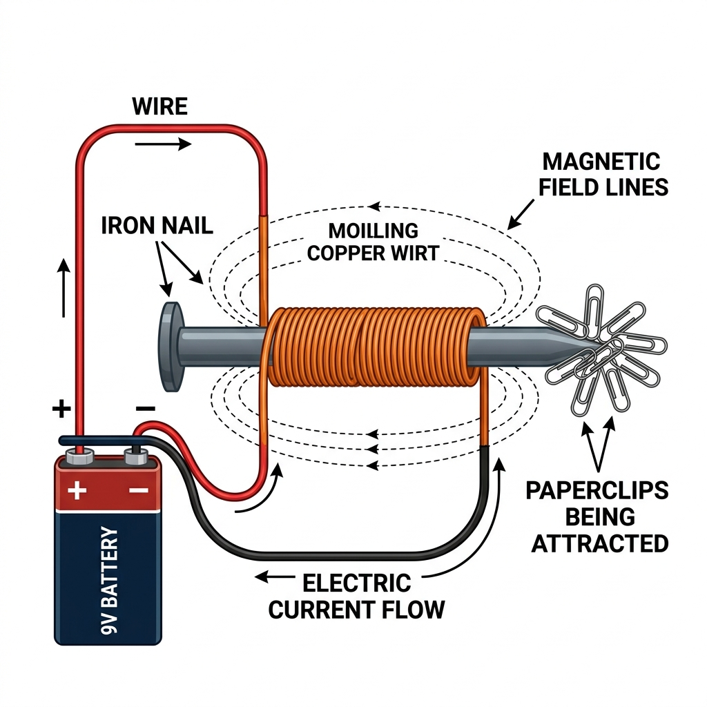
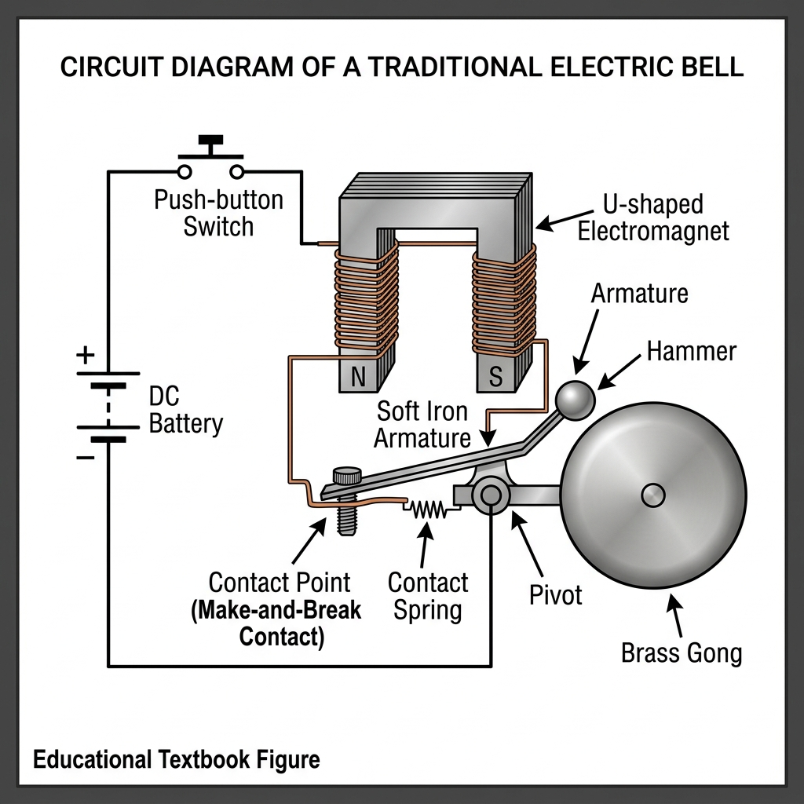
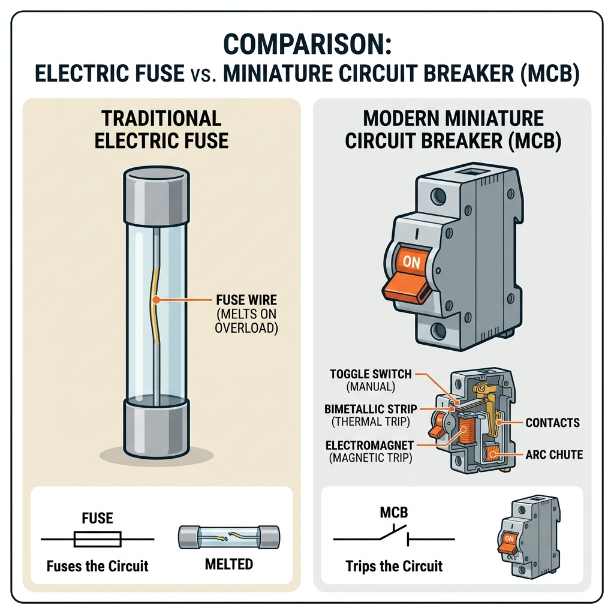

Vardaan Learning Institute
Class 8 Science • Chapter Notes
🌠vardaanlearning.com
📞 9508841336
Electricity: Magnetic and Heating Effects
1. Magnetic Effect of Electric Current

Electricity is a form of energy that flows through wires. When an electric current passes through a wire, the wire starts behaving like a magnet and produces a magnetic field around it. This is known as the magnetic effect of electric current.
If you place a magnetic compass near a current-carrying wire, the needle deflects. When the current is switched off, the needle returns to its original position.
Fact
Hans Christian Oersted (1777-1851), a Danish scientist, was the first to discover the link between electricity and magnetism in 1820. He noticed a compass needle deflecting during a classroom demonstration when an electric circuit was turned on.
Electromagnets
An electromagnet is a temporary magnet made by passing electric current through a coil of insulated wire wrapped around an iron core (like a nail). It acts as a magnet ONLY as long as the current flows. Once the switch is turned off, it loses its magnetism instantly.
Factors Affecting the Strength of an Electromagnet:
- Number of turns: More turns/coils of wire = stronger magnetic field.
- Amount of current: Higher current flowing through the coil = stronger magnetism.
- Material of the core: A soft iron core is the best because it magnetises quickly and loses magnetism immediately when the current stops.
- Tightness of the coil: Tightly wound wire creates a more concentrated and powerful field.
- Thickness of the wire: Thicker wires carry more current without overheating, making the electromagnet stronger.
2. Applications of Magnetic Effect

The relationship between electricity and magnetism is applied in many everyday devices:
- Electric Bell: Uses an electromagnet to pull a metal hammer, which strikes a gong to produce a ringing sound.
- Lifting Electromagnets: Giant cranes in scrap yards use powerful electromagnets to lift heavy iron scrap and vehicles. Turning the switch off drops the scrap easily.
- Maglev Trains: Modern magnetic levitation trains use powerful electromagnets to float above the tracks, reducing friction for high-speed travel.
- Loudspeakers and Microphones: Use the magnetic effect to convert electrical signals into sound waves, and vice versa.
- Electric Motors: Found in fans and washing machines, they convert electrical energy into mechanical motion using magnetic fields.
3. Heating Effect of Electric Current
When electric current flows through a conductor wire, the material opposes the flow of the current. This opposition is called resistance. Overcoming this resistance generates heat. This phenomenon is called the heating effect of electric current.
Factors affecting the heat produced:
- Resistance of the conductor: Higher resistance produces more heat.
- Magnitude of current: A higher amount of current produces more heat.
- Time: The longer the current flows, the more heat is generated.
Important
Household heating appliances (like irons, geysers, and room heaters) use a special coiled heating element made of an alloy called Nichrome. Nichrome is chosen because it has exceptionally high resistance and a very high melting point, allowing it to get red-hot without melting.
Glowing of an Electric Bulb
Traditional electric bulbs contain a very thin wire called a filament, made of Tungsten. Tungsten has an extremely high melting point (~3400°C). When current passes through it, the high resistance makes it heat up (~2500°C) and emit bright light. The bulb is filled with inert gases like argon or nitrogen to stop the filament from burning out.
4. Electrical Safety Devices

Excessive current can cause overheating and electrical fires. To prevent this, safety devices are installed in circuits.
- Electric Fuse: A small device containing a thin wire with a low melting point. If the current exceeds a safe limit, the fuse wire melts and breaks the circuit. It must be replaced after blowing.
- Miniature Circuit Breaker (MCB): An improved safety switch that automatically turns off (trips) when the current exceeds the safe limit. Unlike a fuse, it doesn't need replacing and can simply be switched back ON.
Concept
ISI Mark: Always look for the ISI (Indian Standards Institute) mark on electrical appliances. It guarantees that the product conforms to standard safety guidelines and is safe to use.
5. Portable Sources of Electricity
Devices like torches, wall clocks, and remote controls need portable power sources. A device that converts chemical energy into electrical energy is called a cell. A combination of two or more cells is a battery.
Types of Cells
- Voltaic Cell: The earliest simple cell invented by Alessandro Volta and Luigi Galvani. It uses two different metal electrodes (like Zinc and Copper) dipped in a liquid electrolyte (salt or acid solution). Chemical reactions between them produce electric current.
- Dry Cell: The most common portable battery. It uses a Zinc container (negative terminal), a Carbon rod (positive terminal), and a thick paste of ammonium chloride (electrolyte) instead of a liquid, making it leak-proof. They are non-rechargeable.
- Rechargeable Batteries: Can be reused by supplying electricity to reverse the chemical reactions inside. Examples include Lithium-ion (mobile phones, laptops) and Lead-acid (car batteries, inverters). They are more eco-friendly and cost-effective in the long run.